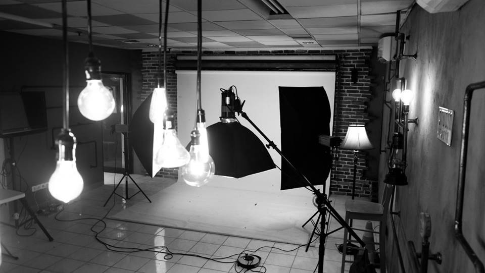
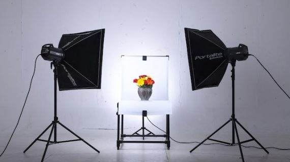

Pencahayaan adalah salah satu elemen terpenting dalam fotografi. Memahami teknik pencahayaan akan sangat mempengaruhi hasil gambar, baik dalam kondisi cahaya alami maupun buatan. Di bawah ini, kita akan membahas beberapa teknik dasar pencahayaan untuk membantu meningkatkan kualitas foto Anda.
Tips Utama dalam Pencahayaan Fotografi
- Pencahayaan Alami: Manfaatkan cahaya matahari untuk mendapatkan hasil yang lembut dan alami. Cahaya pagi dan sore adalah waktu terbaik untuk fotografi karena memberikan warna yang hangat.
- Penggunaan Softbox: Softbox membantu menyebarkan cahaya agar lebih merata dan mengurangi bayangan keras, ideal untuk pemotretan potret dan produk.
- Posisi Sumber Cahaya: Posisi sumber cahaya mempengaruhi bayangan dan kontras. Pencahayaan dari samping menghasilkan efek dramatis, sedangkan pencahayaan langsung dari depan memberikan tampilan yang rata.
- Reflektor: Gunakan reflektor untuk mengarahkan cahaya ke bagian objek yang kurang terang. Reflektor murah ini sangat berguna untuk pemotretan di luar ruangan.
Contoh Teknik Pencahayaan
Foto Pencahayaan alami
Pencahayaan alami saat golden hour untuk efek hangat.
Foto Pencahayaan softbox

Penggunaan softbox untuk mengurangi bayangan pada potret.
Foto Pencahayaan reflektor

Reflektor untuk menambah cahaya pada sisi gelap objek.
Button Ke Dashboard